คัดจากการใช้งานเน้นประโยชน์จริง ไม่ขายเกินจริง
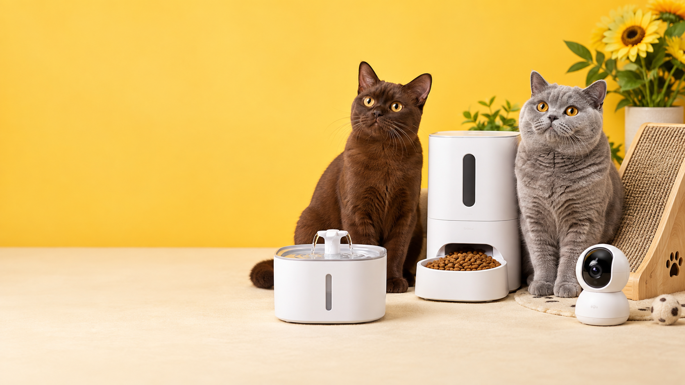
คิดแทนคนเลี้ยงแมวดูทั้งความปลอดภัยและความคุ้มค่า
ซื้อผ่านร้านที่คุณเลือกกดดูราคาและรีวิวล่าสุดบน Shopee
CURATED THIS WEEK
สินค้าแนะนำประจำสัปดาห์
แมวควรมี
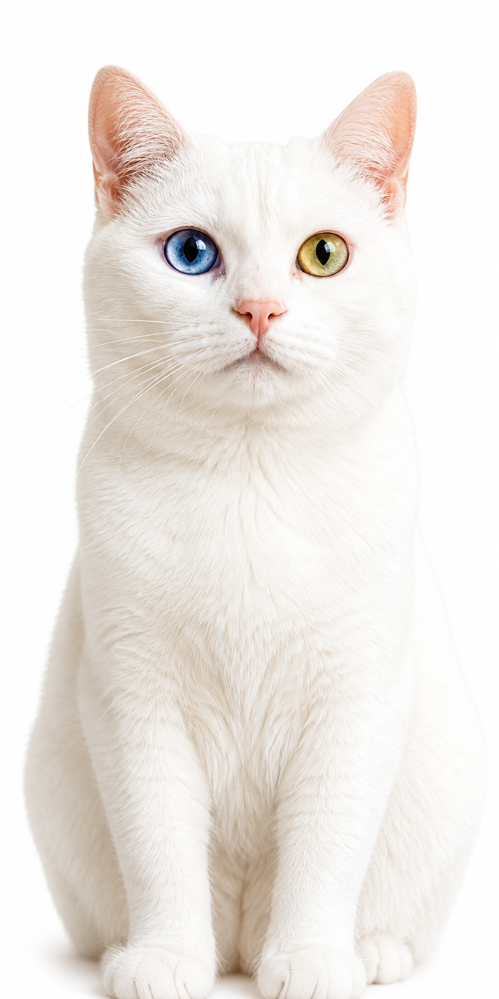
เพื่อนมุมน้ำดื่มPet Techน้ำพุแมวอัตโนมัติ
ช่วยให้น้ำไหลเวียน เหมาะกับบ้านที่อยากดูแลเรื่องการดื่มน้ำ
ดูสินค้าบน Shopee →ยอดนิยม
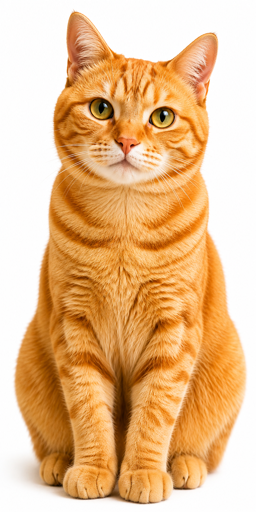
เพื่อนมื้ออร่อยPet Techเครื่องให้อาหารอัตโนมัติ
ตั้งเวลาอาหารได้ ช่วยให้มื้อของเจ้าเหมียวตรงเวลาแม้วันที่ยุ่ง
ดูสินค้าบน Shopee →สาย IT เลือก
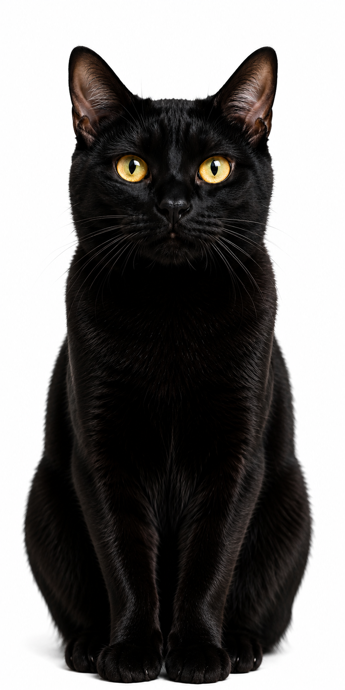
เพื่อนเฝ้าบ้านSmart Homeกล้องดูแมวผ่านมือถือ
เช็กเจ้าเหมียวได้จากนอกบ้าน พร้อมเลือกรุ่นที่เหมาะกับพื้นที่จริง
ดูสินค้าบน Shopee →บ้านน่าอยู่
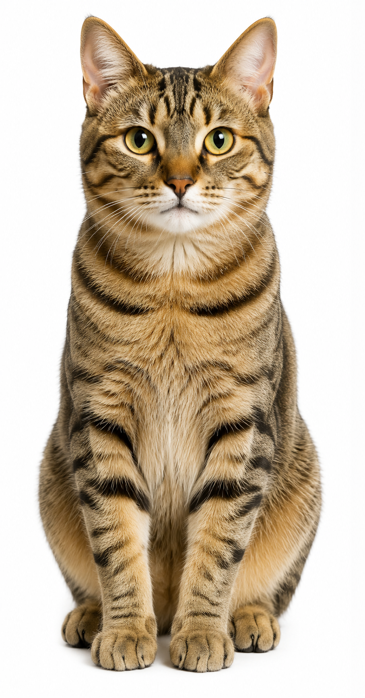
เพื่อนชวนเล่นCat Essentialsที่ลับเล็บแบบทางลาด
มุมลับเล็บกำลังดี ช่วยดึงความสนใจออกจากโซฟาตัวโปรดของเรา
ดูสินค้าบน Shopee →ยังไม่พบสินค้าที่ค้นหา ลองใช้คำว่า “กล้อง”, “น้ำพุ” หรือ “อาหาร”
SHOP BY COLLECTION
เลือกตามสิ่งที่เจ้าเหมียวต้องการ
WHY PAWPICKS
เราไม่ได้เลือกเพราะน่ารักอย่างเดียว
PawPicks Thailand มองทั้งการใช้งาน ความปลอดภัย ความคุ้มค่า และความคิดเห็นจากผู้ซื้อ เพื่อช่วยให้คนเลี้ยงแมวเลือกได้ง่ายขึ้น
THE PAWPICKS FAMILY
รู้จักทีมแมว
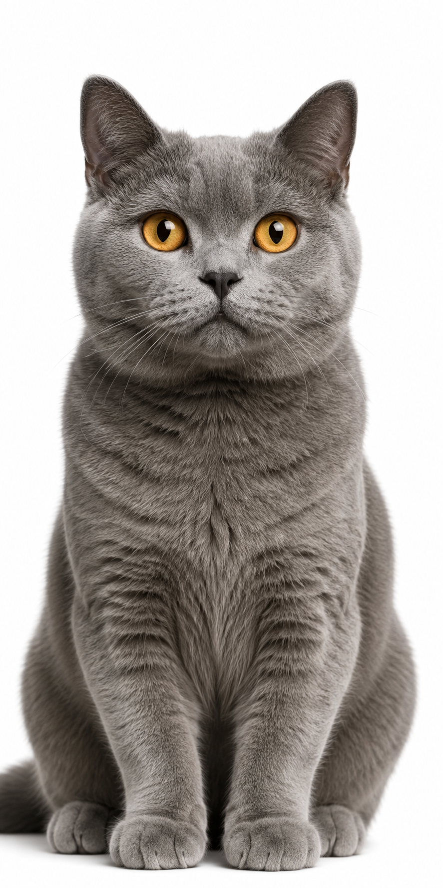
แมวสีเทา แมวขาวตาสองสี แมวดำ แมวส้มลายเสือ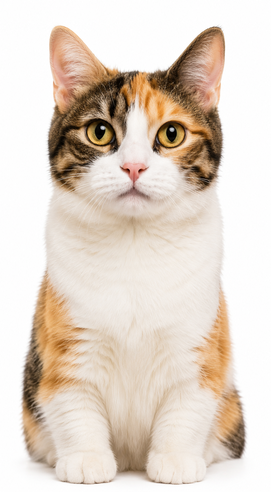
แมวสามสี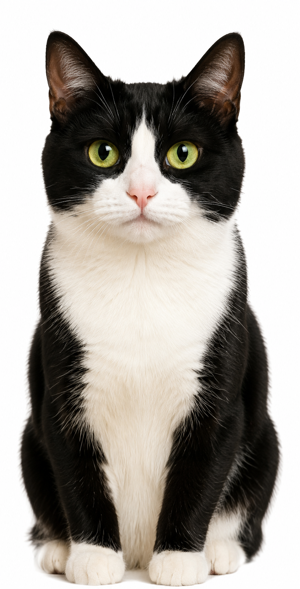
แมวขาวดำ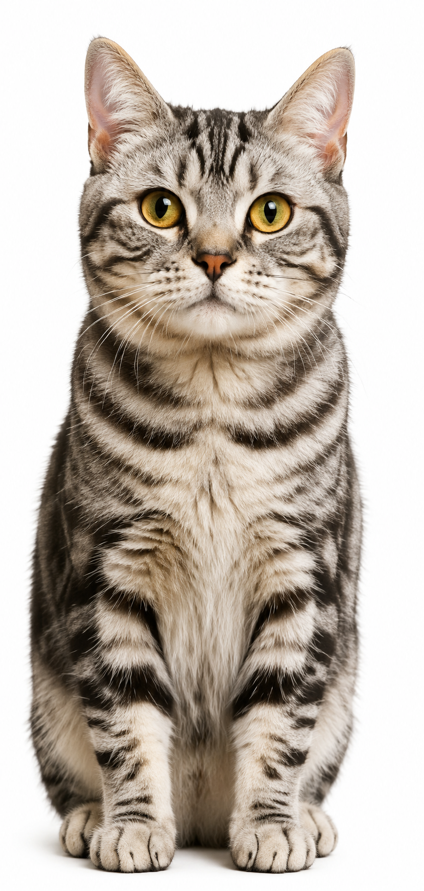
แมวซิลเวอร์แท็บบี้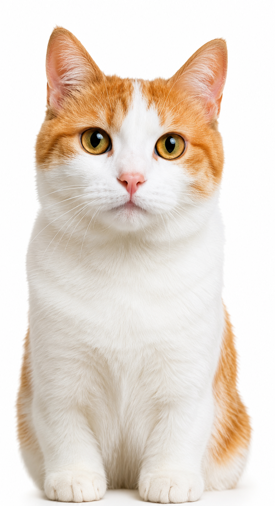
แมวส้มขาว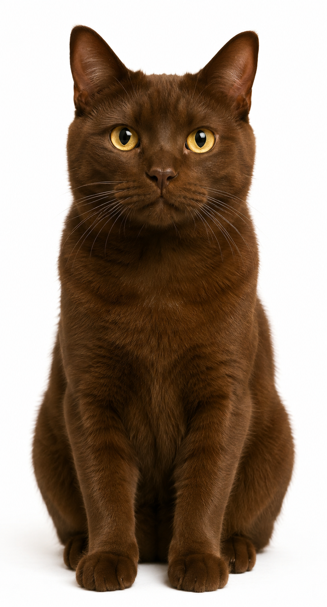
แมวสีน้ำตาล แมวแท็บบี้สีน้ำตาล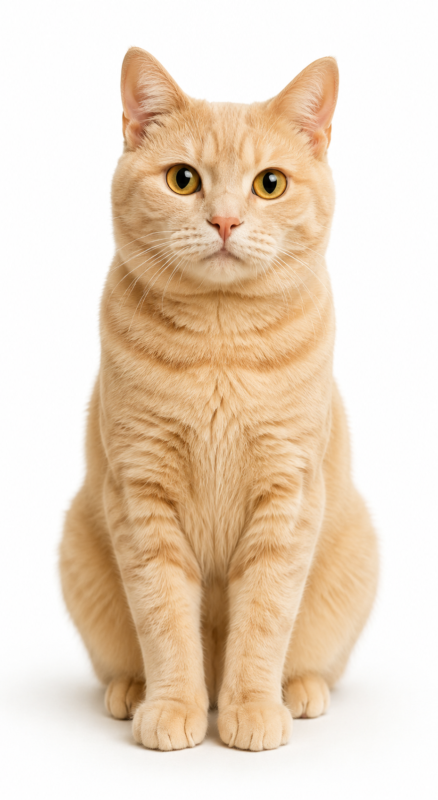
แมวสีครีมส้ม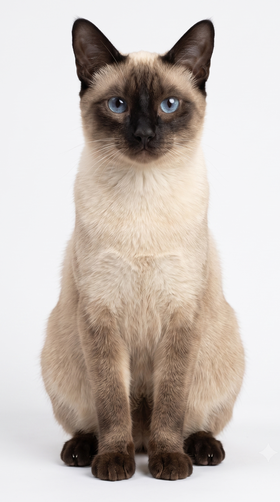
แมวแต้มเข้มตาฟ้ามาสคอตประจำ PawPicks • ใช้สีและลายแทนชื่อ